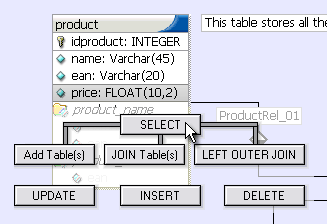
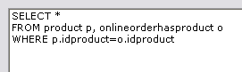
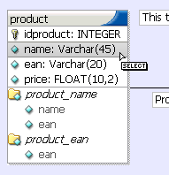

Before starting to query the database the Query Mode has to be selected. To change the current Work Mode click the Work Mode icon in the Toolbar or the Tools Palette or select Query Mode from the Display Main Menu.
SQL selects can be easily build by drag'n'drop commands. Make shure the current worktool is set to a Pointer Tool before starting.
To build a SQL select from one table simply click on a table with the left mousebutton and keep holding the button. Now move the mouse cursor down. The Drag Menu is displayed.

The Drag Menu
Keep holding the left mouse button and move the mouse cursor to the SELECT button. Release the mouse button. The SELECT statement will be build and displayed in the SQL Command Editor.
If the table which has to be queried is not visible in the current visible area of the model, click somewhere on the model to set the focus to the model. Now press the [Space] key and drag the model till the table becomes visible.
To join another table with this table click on the table to join. Start draging like before and release the mouse button over the JOIN Tables(s) Button. The two tables will be joined based on the relations between the tables.

Two tables joined
Another possibility is to select all tables that have to be joined by holding the Ctrl Key and clicking on the tables. Then start dragging and release the mouse button over the JOIN Tables(s) button. All tables will be joined based on the relations between them.
To add one or more tables to a query without performing a join drag the table(s) on the Add Table(s) button. They will be added to the SQL command.
When a SQL command is built using the Drag Menu all columns of the table(s) are selected using the SELECT * clause.
To select specific table columns choose the SELECT Clause Tool from the Toolbar or press Ctrl + S. The mouse cursor will change to the SELECT Clause cursor. Now move the mouse over the table and watch the columns be highlighted. Move the mouse cursor to the column you want to select and press the left mouse button.

Selecting a table's column
To column will be added to the SELECT Statement.
Use the different Clause Tools from the Toolbar to add table columns to the SQL command.
| Tool | Key | Position |
| SELECT Clause Tool | Ctrl + S | SELECT [column] FROM ... |
| FROM Clause Tool | Ctrl + F | SELECT * FROM table_a LEFT OUTER JOIN table_b ON [column] ... |
| WHERE Clause Tool | Ctrl + W | SELECT * FROM table_a WHERE [column] ... |
| GROUP Clause Tool | Ctrl + G | SELECT * FROM table_a GROUP BY [column] ... |
| HAVING Clause Tool | Ctrl + H | SELECT * FROM table_a GROUP BY col1 HAVING [column] ... |
| ORDER Clause Tool | Ctrl + O | SELECT * FROM table_a ORDER BY [column] ... |
| SET Clause Tool | Ctrl + E | UPDATE table_a SET [column] ... |
| Pointer Tool | Ctrl + Q | - |
Copyright 2003 fabFORCE.net. All rights reserved. |
|